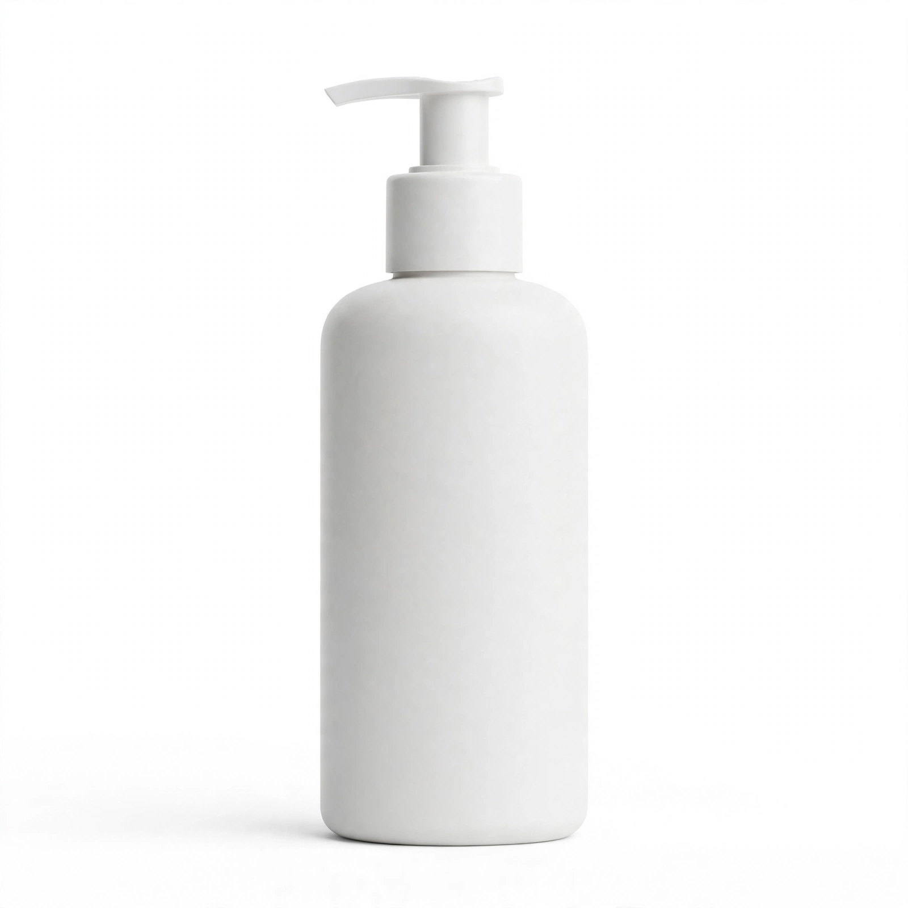

AMY SKIN
長泉方向:黒と金。 存在感のある洗練されたセリフのワードマーク、シャンパンゴールドのドロップレットマーク、純粋なブラック+ゴールドパレット。 プレミアムスキンケアの伝統、ジェンダーニュートラル、そして小さなパッケージに追いつくために建てられました。

プライマリロゴ - マーク+ワードマーク
ファイル： assets/img/logo-e.svg — 透明な背景。 droplet-Aマークは常にシャンパンゴールド#C9A86Aです。 ワードマークは暗く、ライトグラウンドのみ(白またはクリームパネル、ライトパッケージ)でこのファイルを使用します。 ワードマークは、標準的なフォントではなく、カスタム描画されたロゴタイプです。 高コントラストセリフスケルトンから造られた手調のレターフォーム — 「A」は、背が高く、シャープなアペックスと、ドロップレットマーク、M / Y / S / K / I / Nをエコーしたアーチ型のクロスバーが個別に重なり、すべてのレターペアは、手(AM、MY、SK、KI、IN)によってkernedされます。 パスに変換されるので、再設定は行いません。常にファイルを使用します。
色 — 6
ルール: ワードマークは、ライトグラウンドのダークワードマークとしてのみ表示されます(ファイル assets/img/logo-e.svg) またはクリーム白 #F5EFE6 (会話ファイル) assets/img/logo-e-rev.svg) 黒。 マークは常にシャンパンゴールド#C9A86Aです。 決してピンク、決して他の色、決して忙しい背景で。 製品、その処方および包装は色を運びます;ロゴはこれらの6にとどまります。
金ヘアライン: rgba(201,168,106,.25) — 1 px. カードの境界線、セクションの区切り文字、ボタンの輪郭を黒で使用して下さい。 それは唯一の金ライン重量です。決して、ボディディバイダーのための重い金の規則を使用しません。
フォント
| 使用条件 | トピックス | 設定 |
|---|---|---|
| ワードマーク | カスタムドローロゴタイプ(高コントラストセリフスケルトン、手調) | 資本金、ペアカーニング。 “A” apex + アーチ形のクロスバー echo ドロップレットマーク; サブライン “SKINCARE” 文字空間, シャンパンゴールド; 下の金髪ライン |
| ウェブサイトの見出し | Cormorant Garamond, Light 300 | センテンスケース、クリームホワイト #F5EFE6 黒 |
| 本文 | Arial / Helvetica, Regular 400 | クリームホワイト #F5EFE6, 16 px / 1.75 |
| キャプション、ルール | Arial / Helvetica, Regular 400 | 二次 #B8B0A4, 文字空間資本 |
見出しはCormorant Garamond Light 300を使用し、Google Fontsから読み込みます。セルフホストの assets/fonts/cormorant-garamond-500.woff2 そして、 -600.woff2 ファイルは他のページの他のウェイトをカバーします。ロゴファイルのワードマークはカスタムで描画されパス化されているため、印刷用プルーフを含め、どこでも同じように表示されます — フォントから再組版してはいけません。
明確なスペース及び最低のサイズ
明確なスペース: ロゴのすべての4つの側面に1つの帽子の高さ「x」を空にし、x =首都の高さ「A」。 テキストなし、ルールなし、イメージエッジなし、クリアなスペースを入力してください。
x = "A"のキャップの高さ - すべての側面
最小サイズ: 印刷では20 mm幅、画面では100 px幅。プライマリー版とスタック版の両方に適用。マーク単体は16 pxまで使用可（ファビコン、ボトルキャップ）。ワードマークを最小サイズ以下で使用してはいけません。
サイズスケール(デジタル): 

 ✕ 60 px — 余りに小さい、使用しないでください(マークだけで使用)
✕ 60 px — 余りに小さい、使用しないでください(マークだけで使用)
横、逆に、積み重ねられる及び印
プライマリ — 水平ロックアップ
ファイル： assets/img/logo-e.svg. 金の印+軽い地面、1錠の暗いワードマーク。
逆転
ファイル： assets/img/logo-e-rev.svg — クリームホワイト #F5EFE6 ワードマーク、ゴールドマーク、#0A0908 背景、ダークパック、ダークボックスのみ。 反転したファイルをライト背景に使用しないでください。
使用する場合: ウェブサイトのヘッダーとフッター、ブラックヒーロー、CTAエリア、ブラックパッケージ、ダークボックスのみ、逆にファイルを使用します。 軽い地面の第一次ファイルだけを使用して下さい–白かクリーム パネル、軽い包装、軽い在庫の印刷物。 クリアスペース(全面に1つのキャップ高さのx)と最小サイズ(画面上の20mm/100px)は、両方のバージョンで同じです。
積み重ねられた変形 — 狭い包装のため
ファイル： assets/img/logo-e-narrow.svg — ワードマークの上のマーク、パックは90 mm未満、すなわちチューブとシートマスクポーチに直面しています。 他の場所では、プライマリバージョンを使用します。 プライマリバージョンを絞ったり伸ばしたりしないでください。
マークだけで


ファイル： assets/img/mark.svg (金)と assets/img/mark-navy.svg (シングルカラーダーク) 「A」として読み込まれたドロップレット。 ファビコン、ソーシャルアバター、ボトルキャップ、シールのみでご使用ください。フルワードマークが小さすぎます。 ゴールドマークはデフォルトです。ダークシングルカラーマークは、ライトグラウンドでの単色印刷だけのためです。
推奨： 1つのロックアップだけ・ゆとりの空間を保ちながら・狭いパックに積み重ねられたバリアントを使用・黒に逆転させたり・小サイズのだけでマークを使用。 禁止： マークを再照らす · スペースを再構成するか、 ワードマークを再設定する · ストレッチ, アウトラインまたはロゴをシャドウ · 別のモチーフを追加 · ピンクを追加 · 忙しい背景に置く · 最小サイズの下のワードマークを使用してください。
あらゆるパックのブランド
製品レンダー — あなたのブランド名は、パック、ストレート、完了、トリミングされたことはありません。 管およびマスクの袋の積み重ねられた変形、他のどこでも第一次錠。 以下の12のレンダーは、34以上のライブラリから10,000の注目の処方の例です。 すべての34の特色の処方を見る →





ラベルの規則: ブランド名は、パックの唯一のブランドマークです。 商品名、フォーマット、サイズは小文字スペースの首都(第2 #B8B0A4 ダークグラウンド)で下に移動します。 他のブランド、包装の中国のテキスト無し。
ウェブサイトのカラースキーム(このVIから)
--ink: #0A0908; /* hero black — header, hero, CTA, large dark areas */ --gold: #C9A86A; /* accent — mark, hairlines, buttons on black */ --bg: #0D0B09; /* page black background */ --card: #181310; /* cards & panels on black */ --text: #F5EFE6; /* cream white — primary text on black */ --muted: #B8B0A4; /* secondary text on black */ --line: rgba(201,168,106,.25); /* gold hairline — card borders, dividers, button outlines */
ヘッダ、ヒーロー、CTAを閉じる #0A0908 逆に (クリームホワイト) ロゴ — 黒は大胆に使用され、大きな暗い領域では、クリームホワイトとゴールドはそれに対する実質のコントラストとして読みます。 黒い部分的なボタンは黒いテキストが付いている縦の金属金の勾配(#D8BC7E → #C9A86A)を使用します; ゴースト ボタンは金のヘアラインのボーダーと透明です rgba(201,168,106,.25) クリームホワイトのテキスト。リンクはシャンパンゴールド #C9A86A。見出しはクリームホワイト #F5EFE6のCormorant Garamond Light 300。本文はクリームホワイト #F5EFE6のArial / Helvetica、16 px / 1.75。補助テキストは #B8B0A4。製品カードはクリーム地にゴールドのヘアライン罫を維持し、製品写真は撮影そのままに。WhatsAppボタンはWhatsAppグリーンのまま — ブランドカラーではなく機能的なチャンネルボタンです。
ロゴファイル
| ファイル | 使用条件 |
|---|---|
assets/img/logo-e.svg | 第一次ロゴ — 水平ロックアップ、金マーク+ダークワードマーク、透明、ライトグラウンドのみ |
assets/img/logo-e-rev.svg | 逆ロゴ — クリーム ホワイトワードマーク+ゴールドマーク、#0A0908背景のみ |
assets/img/logo-e-narrow.svg | スタック版 — ワードマークの上にマーク。幅90 mm未満のパック用（チューブ、マスクパウチ） |
assets/img/mark.svg | Droplet-Aマークだけで、金 — ファビコン、アバター、キャップ、シール |
assets/img/mark-navy.svg | Droplet-A マークだけで、シングルカラーダーク — 照明地での単色印刷のみ |
前のロゴ(Direction E, sans-serif)は、 assets/brand/archive-logo-e/ 使いません。 お問い合わせ: WhatsApp +86 189 2882 3858 · info@amyskinoem.com · VI標準キットをダウンロード →